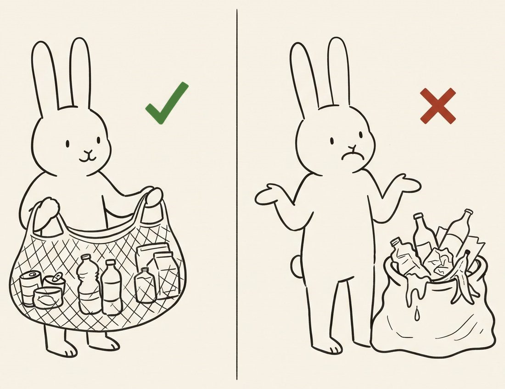
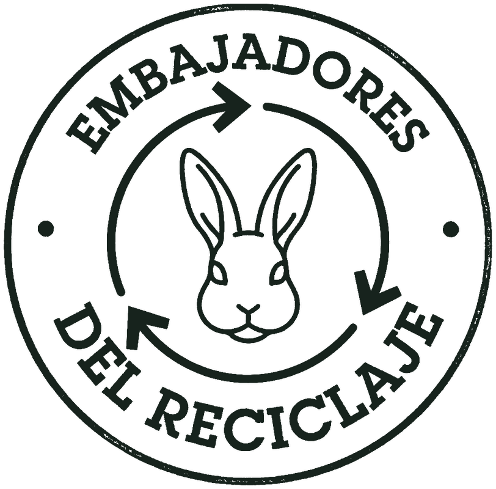

Dos mazos
El primero es la explicación completa y alcanza en diez minutos. El segundo es para cuando alguien pregunta por el dinero en serio. Se leen aquí como un guion, o se proyectan con el botón Presentar: una lámina a la vez, a pantalla completa.
Flechas o barra espaciadora avanzan · A esconde el texto de apoyo · N muestra las notas de quien conduce · Esc sale.
El acopio, de principio a fin
De la lata que ibas a tirar a la banca que se va a quedar.
1 La idea
Lo que separamos, lo construimos.
Todos los días salen del campus latas, botellas y envases que valen dinero. Ese dinero hoy se va en el camión de la basura. La propuesta cabe en una línea: separarlo, pesarlo a la vista de todos, venderlo, y que lo que deje se quede aquí adentro.
Arranca preguntando qué hicieron ayer con su última lata vacía. No corrijas a nadie: nomás escucha dos o tres respuestas. La lámina que sigue contesta sola.
2 Qué se recibe
Los precios son de referencia y se mueven cada mes con el mercado; los que ves en pantalla son los que están cargados hoy en el sitio. Si alguien pregunta por el cartón o el TetraPak, contesta que sí se separan en el campus pero no entran en este programa, y sigue.
3 Cómo tiene que llegar
Limpio, seco y separado.
Una lata con refresco adentro moja todo lo demás y le baja el precio al costal completo. Enjuagar tarda tres segundos y es la diferencia entre material y basura mojada.

Esta es la lámina que de verdad cambia la conducta. Detente aquí más que en ninguna otra: si el material llega sucio, el programa entero se vuelve trabajo de más para quien pesa.
4 Cuándo y dónde
Por confirmar
Que salgan de la sala con la fecha en el celular, no en la cabeza. Diles que la pongan de una vez con alarma del día anterior; la primera colecta se cae siempre por olvido, no por falta de ganas.
5 El pesaje
Se pesa frente a todxs.
- Tus kilos se anotan con tu nombre en la libreta.
- Lo mismo que se firmó ese día es lo que se publica en la página.
- Si un número no cuadra, avisa en el área y se corrige.
Aquí es donde se gana la confianza: nadie tiene que creer nada, todo está escrito y firmado. Si puedes, lleva la libreta a la sesión y enséñala.
6 El reparto
De cada peso, una parte para todos y otra para el área.
Se parte lo vendido, sin descontarle nada antes. El 70% compartido llega limpio: los costales, la báscula y todo lo que cuesta operar salen del 30% del área. Las dos partes se publican.
Esta es la lámina clave y es donde se cae o se sostiene la confianza. Di los dos destinos completos y no te saltes el 30: de ahí salen los costales y la báscula que hacen posible el otro 70, que por eso llega limpio. Si alguien alega, la respuesta honesta es que es un acuerdo, no una ley: se puede discutir, y mientras esté vigente se cumple y se publica.
7 El 70% compartido
Obra en curso
Que la obra se vea. Si la sala tiene ventana hacia la explanada, señálala. El chiste de este programa es que el resultado se pueda tocar, no que salga en un informe.
8 El 30% del área
El otro 30 es el presupuesto del área, y de ahí sale operar.
- Sin costales y sin báscula no hay colecta: eso lo paga el 30, no el 70.
- Por eso el 70% compartido llega limpio: nadie le descuenta gastos antes.
- También se rinde: cada gasto aparece en la página con concepto, monto y fecha, igual que las obras.
Si alguien pregunta si es dinero para sueldos, contesta claro que no: es para lo que se compra y se usa. Y remátalo con que está publicado renglón por renglón en la página de cuentas. Al arrancar esa bolsa puede estar en rojo, porque los costales se compran antes de la primera venta; también eso se publica.
9 Las cuentas están abiertas
Todo esto se puede revisar sin pedir permiso.
- Kilos por colecta, material por material.
- Actas de venta: comprador, kilos, precio y firma.
- El padrón: quién tiene costal y cómo va cada quién.
- El reparto y en qué se fue cada bolsa.
Está en la pestaña “Las cuentas” de esta misma página, y se actualiza el mismo día del pesaje.
Ábrela en vivo si hay proyector y conexión. Vale más treinta segundos de página real que tres láminas prometiendo transparencia.
10 Cómo le entras
Pides tu costal y ya estás dentro.

No cierres sin que alguien lo pida ahí mismo. Un costal entregado en la sala vale más que veinte personas convencidas que se van sin nada en la mano.
11 Cierre
Lo que separamos, lo construimos.
Las cuentas, de cerca
La misma historia, pero con la calculadora en la mano.
1 La cuenta, en dos pasos
Se vende y se parte. Los gastos vienen después, y de un solo lado.
- Vendido. Kilos por precio, acta por acta, con firma de quien compró.
- El reparto. Se divide lo vendido, sin descontarle nada antes.
- Los gastos. Costales, báscula, guantes: salen del 30% del área.
El orden importa y conviene decirlo despacio: el reparto va antes que los gastos, así que comprar costales no le quita un peso a la obra compartida. El área es la que carga con el costo de operar.
2 El reparto, con los números de hoy
Si la bolsa todavía está en ceros, dilo sin rodeos: el programa apenas arranca y los ceros también son cuentas claras. Vale más un cero publicado que un estimado bonito.
3 La obra no avanza con todo lo vendido
La barra de la portada sube con el 70%, no con todo.
Es la confusión más fácil de cometer y la más cara: si se cuenta lo vendido completo contra el costo de la obra, la página promete una fecha que no va a cumplir.
Este es el detalle técnico que hay que cuidar cuando alguien más tome la página. Está escrito en el archivo de datos y en las notas del repositorio.
4 Las reglas que no se rompen
Cuatro, y son las que sostienen todo lo demás.
- No se inventa ni se estima ningún número: cada cifra pasó por la báscula y por la libreta.
- Nadie se borra del padrón por no haber traído nada. Quien no trajo, aparece con cero.
- Los precios los pone quien compra, no nosotros.
- Solo esos materiales, aunque sobre espacio en el costal.
Si te preguntan por qué aparecen los ceros, la respuesta es que esconderlos volvería inútil el seguimiento: no es una lista de honor, es una libreta.
5 Qué se necesita de tu área
Tres cosas, y ninguna cuesta dinero.
- Que pidas tu costal y lo uses. El ejemplo del profe arrastra más que el cartel.
- Diez minutos de tu grupo para pasar el primer mazo.
- Recordar la fecha en voz alta la semana de la colecta.
Cierra pidiendo algo concreto y con fecha. Un “sí, luego lo vemos” de academia es un no con buenos modales.